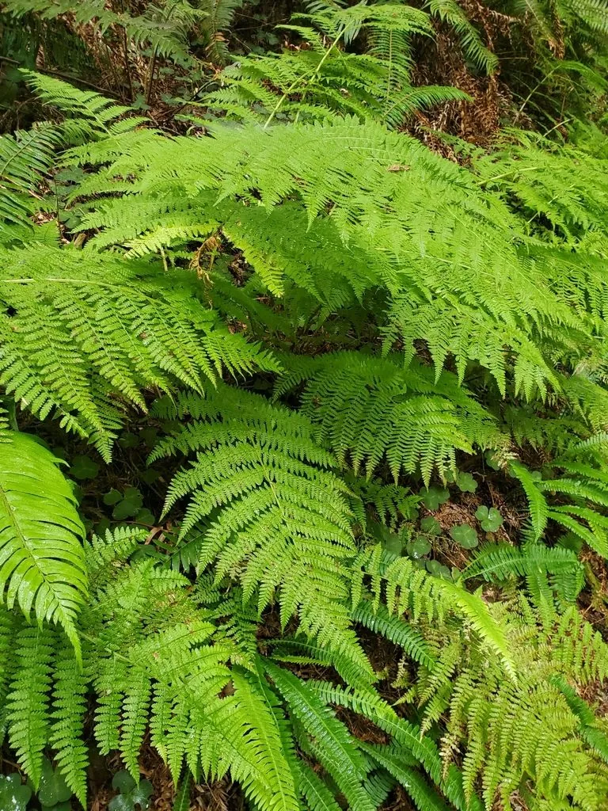

蕨类与裸子植物 · 植物界
蹄盖蕨 Athyrium filix-femina

蹄盖蕨的叶片细裂如羽毛、丛生优美，嫩叶可作山野菜“猴腿菜”，是林下常见的观赏与食用蕨类植物。
- 分类
- 门蕨类植物门纲水龙骨纲目水龙骨目科蹄盖蕨科属蹄盖蕨属
- 栖息环境
- 山地林下、溪边与沟谷，喜阴湿凉爽环境
- 地理分布
- 中国东北、华北、西北、西南及北半球温带山地
- 保护级别
- 暂无评估；野生种群常见
物种志
蹄盖蕨是蹄盖蕨科多年生蕨类，株高 0.4–1 m。根状茎横走或斜生，叶簇生；叶片二至三回羽状复叶，轮廓长圆状披针形，末回小羽片细密，叶脉明显。孢子囊群长圆形或马蹄形，着生于小脉上，囊群盖同形，成熟时褐色。叶柄基部常带褐色鳞片。
蹄盖蕨喜阴湿、凉爽环境，多生于山地林下、溪边与沟谷，在温带和亚热带山地都很常见。它以孢子繁殖，也可分株，适合林下地被与阴湿处绿化。春季嫩叶拳卷，可作山野菜食用，民间称“猴腿菜”，焯水后可炒食或腌渍，是东北、华北山区常见的野菜；根状茎在部分地区也作药用。蹄盖蕨种类很多，外形相似，采食时应辨明种类。
形态与习性
- 株高0.4–1 m
- 叶二至三回羽状复叶，细裂如羽
- 孢子囊群长圆形或马蹄形
- 食用嫩叶称“猴腿菜”，可作山野菜
- 生境山地林下阴湿处
趣味知识
- 蹄盖蕨的孢子囊群形状像马蹄，所以有“蹄盖”之名。
- 它的嫩叶在东北山区被当作野菜“猴腿菜”采食。
- 蹄盖蕨种类很多，外形相似，采食时要注意辨别。